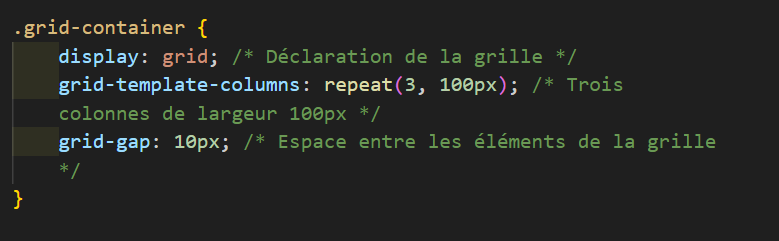

Variables CSS
Les variables CSS permettent de définir des valeurs réutilisables dans une feuille de style. Le gain de temps pour changer ses styles par la suite est considérable.
L'imbrication
L'imbrication, aussi appelée nesting, permet d'indenter le CSS, un peu comme du HTML. C'est très utile pour les sélecteurs CSS.
Grid Layout
La mise en page sous forme de grille en CSS est extrêmement puissante et révolutionnaire. J'ai hâte de l'apprendre !
Transitions CSS
Les transitions en CSS3 ont été ajoutées pour créer des animations plus fluides, par exemple sur les boutons.
Exemple (survoler)
Animations CSS
L'animation en CSS3 permet de créer des effets visuels complexes. Les termes utilisés sont proches de ceux des logiciels d'animation avec interfaces, comme Animate CC ou After Effects.